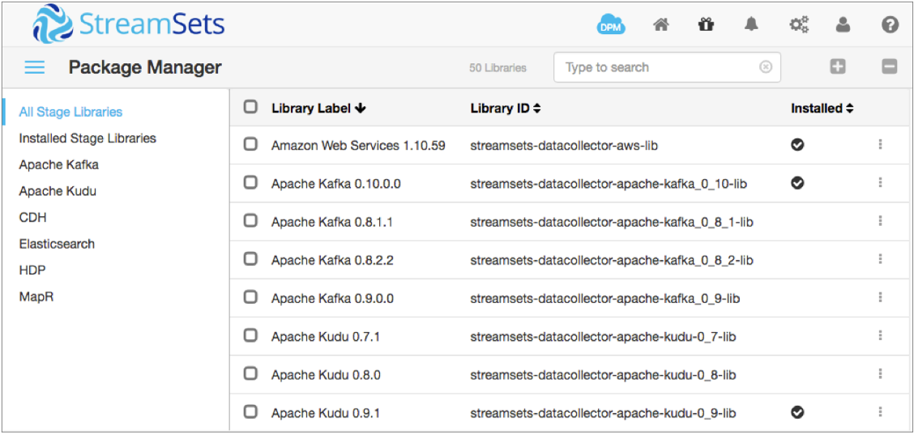

Install Additional Stage Libraries
Install additional stage libraries to use stages that are not included in the core installation of Data Collector. This is an optional step, but generally you'll want to install additional stage libraries to process data after completing a core installation. When necessary, you can also install legacy stage libraries.
For a complete list of the stages installed with each stage library, see Available Stage Libraries.
You can install additional RPM stage libraries using the Data Collector command line program.
You can install additional tarball stage libraries using the Package Manager within Data Collector or using the Data Collector command line program.
Installing for RPM
Use the following commands to install additional stage libraries for an RPM installation:
- To install one or more stage libraries:
- Use the following command to install the stage libraries downloaded to the current directory:
-
yum localinstall <libraryID>-<version>-1.noarch.rpm,<libraryID>-<version>-1.noarch.rpm,...
- Use the full name of the library package that you want to install, separating them with commas. Do not include spaces in the command.
- For example, to install the Amazon S3 origin and destination, as well as the
Kudu destination for Data
Collector version 3.0.0.0, use the following command:
yum localinstall streamsets-datacollector-aws-lib-3.0.0.0-1.noarch.rpm,streamsets-datacollector-apache-kudu_1_0-lib-3.0.0.0-1.noarch.rpm
- To list the stage libraries installed on the current Data Collector:
- Use the following
command:
yum list installed | grep streamsets
- To uninstall libraries when necessary:
- Use the following
command:
yum remove <libraryID>,<libraryID>,...
- Use the full name of the libraries that you want to uninstall, separating them with commas. Do not include spaces in the command.
- For example, to uninstall the Amazon S3 origin and destination, use the
following
command:
yum remove streamsets-datacollector-aws-lib
Installing for Tarball Using the Package Manager
You can use the Package Manager within Data Collector to install additional tarball stage libraries.
Complete one of the following steps to display the Package Manager:
-
Click the Package Manager icon
 .
. - Click Add/Remove Stages in the stage library when viewing a pipeline in the pipeline canvas.
The Package Manager lists all available stage libraries, displaying a check mark next to each installed library. You can filter the stage libraries by type or you can search for a stage library in the list.
For example, the following image displays three installed stage libraries:

To install an additional stage library, click the More icon for
the library, and then click Install. Or to install multiple stage
libraries, select the libraries in the list and then click the
Install icon  . Confirm that you want to install the libraries,
and then restart Data
Collector
for the changes to take effect.
. Confirm that you want to install the libraries,
and then restart Data
Collector
for the changes to take effect.
For information about the stages installed with each stage library, see Available Stage Libraries.
Installing for Tarball Using the Command Line
You can use the stagelibs command to install additional tarball stage libraries.
The stagelibs command requires that curl version 7.18.1 or later and sha1sum utilities are installed on the machine. Verify that these utilities are installed before running the command.
- To view the list of available libraries:
- Use the following
command:
$SDC_DIST/bin/streamsets stagelibs -list
- This provides a list of all available stage libraries and whether they are already installed. For more information about the stages installed with each stage library, see Available Stage Libraries.
- To install one or more stage libraries:
- Use the following
command:
$SDC_DIST/bin/streamsets stagelibs -install=<libraryID>,<libraryID>,...
- Use the full name of the libraries that you want to install, separating them with commas. Do not include spaces in the command.
- For example, to install the Amazon S3 origin and destination, as well as the
Cassandra destination, use the following command:
$SDC_DIST/bin/streamsets stagelibs -install\ =streamsets-datacollector-aws-lib,streamsets-datacollector-cassandra_2-lib
- When successful, the command line indicates that the stage libraries have
been installed as follows:
Downloading: https://archives.streamsets.com/datacollector/<version>/tarball\ /streamsets-datacollector-aws-lib-<version>-SNAPSHOT.tgz ######################################################################## 100.0% Downloading: https://archives.streamsets.com/datacollector/<version>/tarball\ streamsets-datacollector-jdbc-lib-<version>-SNAPSHOT.tgz ######################################################################## 100.0% Downloading: https://archives.streamsets.com/datacollector/<version>/tarball\ streamsets-datacollector-rabbitmq-lib-<version>-SNAPSHOT.tgz ######################################################################## 100.0% Stage library streamsets-datacollector-aws-lib installed Stage library streamsets-datacollector-jdbc-lib installed Stage library streamsets-datacollector-rabbitmq-lib installed
- To generate the command required to perform the current installation (optional):
- You can use the stagelibs command to generate the command to install the libraries that are installed on the current Data Collector. This allows you to easily replicate the installation elsewhere.
- For example, say you installed three libraries above, and then installed another two. You can generate the command required to install all five libraries on additional machines.
- To generate an installation script based on the current Data
Collector installation, use the following
command:
$SDC_DIST/bin/streamsets stagelibs -installScript
- The command returns an install command, such as the following:
================================================================================= streamsets stagelibs -install=streamsets-datacollector-apache-kafka_0_8_1-lib,\ streamsets-datacollector-aws-lib,streamsets-datacollector-basic-lib,\ streamsets-datacollector-cdh_kafka_1_3-lib,streamsets-datacollector-jdbc-lib,\ streamsets-datacollector-jython_2_7-lib,streamsets-datacollector-rabbitmq-lib =================================================================================
- To uninstall libraries when necessary:
- To uninstall a library, use the following
command:
$SDC_DIST/bin/streamsets -uninstall=<libraryID>,<libraryID>,...
- Use the full name of the libraries that you want to uninstall, separating them with commas. Do not include spaces in the command.
Available Stage Libraries
| Stage Library Name | Included Stages |
|---|---|
| streamsets-datacollector-apache-kafka_0_9-lib | For Kafka version 0.9.x. Includes:
|
| streamsets-datacollector-apache-kafka_0_10-lib | For Kafka version 0.10.x. Includes:
|
| streamsets-datacollector-apache-kafka_0_11-lib | For Kafka version 0.11.x. Includes:
|
| streamsets-datacollector-apache-kafka_1_0-lib | For Kafka version 1.0.x. Includes:
|
| streamsets-datacollector-apache-kudu_1_3-lib | For Kudu version 1.3.x. Includes the Kudu Lookup processor and Kudu destination. |
| streamsets-datacollector-apache-kudu_1_4-lib | For Kudu version 1.4.x. Includes the Kudu Lookup processor and Kudu destination. |
| streamsets-datacollector-apache-kudu_1_5-lib | For Kudu version 1.5.x. Includes the Kudu Lookup processor and Kudu destination. |
| streamsets-datacollector-apache-solr_6_1_0-lib | For Apache Solr version 6.1. Includes the Solr destination. |
| streamsets-datacollector-aws-lib | For Amazon Web Services 1.11. Includes:
|
| streamsets-datacollector-azure-lib | For Microsoft Azure. Includes:
|
| streamsets-datacollector-basic-lib | Installs automatically with the core installation. Includes the
following origins:
Includes all processors except the Groovy Evaluator, HBase Lookup, Jython Evaluator, Kudu Lookup, Redis Lookup, and Spark Evaluator. Includes the following destinations:
Includes the following executors:
|
| streamsets-datacollector-bigtable-lib | For Google Cloud Bigtable. Includes the Google Bigtable destination. |
| streamsets-datacollector-cassandra_3-lib | For Cassandra 1.2, 2.x, and 3.x. Includes the Cassandra destination. |
| streamsets-datacollector-cdh_5_8-lib |
For the Cloudera CDH version 5.8 distribution of Hadoop. Includes:
|
| streamsets-datacollector-cdh_5_9-lib |
For the Cloudera CDH version 5.9 distribution of Hadoop. Includes:
|
| streamsets-datacollector-cdh_5_10-lib |
For the Cloudera CDH version 5.10 distribution of Hadoop. Includes:
|
| streamsets-datacollector-cdh_5_11-lib |
For the Cloudera CDH version 5.11 distribution of Hadoop. Includes:
|
| streamsets-datacollector-cdh_5_12-lib |
For the Cloudera CDH version 5.12 distribution of Hadoop. Includes:
|
| streamsets-datacollector-cdh_5_13-lib |
For the Cloudera CDH version 5.13 distribution of Hadoop. Includes:
|
| streamsets-datacollector-cdh_5_8-cluster-cdh_kafka_2_0-lib |
For the Cloudera version 5.8 distribution of Apache Kafka 2.0. Includes the Kafka Consumer origin for cluster mode pipelines. |
| streamsets-datacollector-cdh_5_9-cluster-cdh_kafka_2_0-lib |
For the Cloudera version 5.9 distribution of Apache Kafka 2.0. Includes the Kafka Consumer origin for cluster mode pipelines. |
| streamsets-datacollector-cdh_5_10-cluster-cdh_kafka_2_1-lib |
For the Cloudera version 5.10 distribution of Apache Kafka 2.1. Includes the Kafka Consumer origin for cluster mode pipelines. |
| streamsets-datacollector-cdh_5_11-cluster-cdh_kafka_2_1-lib |
For the Cloudera version 5.11 distribution of Apache Kafka 2.1. Includes the Kafka Consumer origin for cluster mode pipelines. |
| streamsets-datacollector-cdh_5_12-cluster-cdh_kafka_2_1-lib |
For the Cloudera version 5.12 distribution of Apache Kafka 2.1. Includes the Kafka Consumer origin for cluster mode pipelines. |
| streamsets-datacollector-cdh_kafka_2_0-lib | For the Cloudera distribution of Apache Kafka 2.0.x (0.9.0).
Includes:
|
| streamsets-datacollector-cdh_kafka_2_1-lib | For the Cloudera distribution of Apache Kafka 2.1.x (0.9.0).
Includes:
|
| streamsets-datacollector-cdh_kafka_3_0-lib | For the Cloudera distribution of Apache Kafka 3.0.0
(0.11.0). Includes:
|
| streamsets-datacollector-cdh_spark_2_1_r1-lib | For the Cloudera distribution of Spark 2.1. Includes:
|
| streamsets-datacollector-cyberark-credentialstore-lib | For the CyberArk credential store system. |
| streamsets-datacollector-elasticsearch_5-lib | For Elasticsearch 1.x, 2.x, and 5.x. Includes the Elasticsearch origin and destination. |
| streamsets-datacollector-google-cloud-lib | For Google Cloud. Includes:
|
| streamsets-datacollector-groovy_2_4-lib | For Groovy version 2.4. Includes the Groovy Evaluator processor. |
| streamsets-datacollector-hdp_2_4-lib | For the Hortonworks version 2.4 distribution of Apache Hadoop.
Includes:
|
| streamsets-datacollector-hdp_2_4-hive1-lib | For the Hortonworks version 2.4.x distribution of Apache Hive
version 1.x. Includes:
|
| streamsets-datacollector-hdp_2_5-lib | For the Hortonworks version 2.5.x distribution of Apache Hadoop.
Includes:
|
| streamsets-datacollector-hdp_2_5-flume-lib | For the Hortonworks version 2.5.x distribution of Apache
Flume. Includes the Flume destination. |
| streamsets-datacollector-hdp_2_6-lib | For the Hortonworks version 2.6.x distribution of Apache Hadoop.
Includes:
|
| streamsets-datacollector-hdp_2_6-flume-lib | For the Hortonworks version 2.6.x distribution of Apache
Flume. Includes the Flume destination. |
| streamsets-datacollector-hdp_2_6-hive2-lib | For the Hortonworks version 2.6.x distribution of Apache Hive
version 2.1. Includes:
|
| streamsets-datacollector-hdp_2_6_1-hive1-lib | For the Hortonworks version 2.6.1 distribution of Apache Hive
version 1.x. Includes:
|
| streamsets-datacollector-hdp_2_6_2-hive1-lib | For the Hortonworks version 2.6.2 distribution of Apache Hive
version 1.x. Includes:
|
| streamsets-datacollector-influxdb-0_9-lib | For InfluxDB version 0.9 or greater. Includes the InfluxDB destination. |
| streamsets-datacollector-jdbc-lib |
For JDBC access to databases. Includes:
|
| streamsets-datacollector-jks-credentialstore-lib | For the Java keystore credential store system. |
| streamsets-datacollector-jms-lib | For Java Messaging Services (JMS). Includes the JMS Consumer origin and JMS Producer destination. |
| streamsets-datacollector-jython_2_7-lib | For Jython version 2.7.x. Includes the Jython Evaluator processor. |
| streamsets-datacollector-kinetica_6_0-lib | For Kinetica 6.0. Includes the KineticaDB destination. |
| streamsets-datacollector-mapr_5_0-lib | For MapR version 5.0. Includes:
|
| streamsets-datacollector-mapr_5_1-lib | For MapR version 5.1. Includes:
|
| streamsets-datacollector-mapr_5_2-lib | For MapR version 5.2. Includes:
|
| streamsets-datacollector-mapr_6_0-lib | For MapR version 6.0. Includes:
|
| streamsets-datacollector-mapr_6_0-mep4-lib | For MapR 6.0, MapR Ecosystem Pack (MEP) version 4.
Includes:
|
| streamsets-datacollector-mapr_spark_2_1_mep_3_0-lib | For the MapR distribution of Spark 2.1. Includes:
|
| streamsets-datacollector-mongodb_3-lib | For MongoDB 3.0. Includes:
|
| streamsets-datacollector-mysql-binlog-lib | For MySQL binary logs. Includes the MySQL Binary Log origin. |
| streamsets-datacollector-omniture-lib | For Omniture. Includes the Omniture origin. |
| streamsets-datacollector-rabbitmq-lib | For RabbitMQ version 3.5.6. Includes the RabbitMQ Consumer origin and RabbitMQ Producer destination. |
| streamsets-datacollector-redis-lib | For Redis versions 2.8 and 3.0. Includes:
|
| streamsets-datacollector-salesforce-lib |
For Salesforce. Includes:
|
| streamsets-datacollector-stats-lib | Installs automatically with the core installation. StreamSets Control Hub requires that the statistics stage library be installed on each registered Data Collector. |
| streamsets-datacollector-vault-credentialstore-lib | For the Hashicorp Vault credential store system. |
| streamsets-datacollector-windows-lib | Installs automatically with the core installation. For Windows. Includes the Windows Event Log origin. |
Legacy Stage Libraries
Legacy stage libraries are older stage libraries that have been removed from Data Collector. Though we strongly advise using the stage libraries provided with Data Collector, and upgrading related systems, you can continue to use these legacy libraries when necessary.
For steps for upgrading pipelines that use legacy libraries to current stage libraries, see Update Pipelines using Legacy Stage Libraries.
To use a legacy library:
- To download a legacy library, go to the StreamSets archives page and navigate to the release that you are using. Click the "Legacy" link and download the legacy libraries that you want to use.
- Install and manage the legacy libraries as you would custom stage libraries. For more information, see Custom Stage Libraries.
| Legacy Stage Library | Included Stages |
|---|---|
| streamsets-datacollector-apache-kafka_0_8_1-lib | For Kafka version 0.8.1. Includes:
|
| streamsets-datacollector-apache-kafka_0_8_2-lib | For Kafka version 0.8.2. Includes:
|
| streamsets-datacollector-apache-kudu_1_0-lib | For Kudu version 1.0.x. Includes the Kudu Lookup processor and Kudu destination. |
| streamsets-datacollector-apache-kudu_1_1-lib | For Kudu version 1.1.x. Includes the Kudu Lookup processor and Kudu destination. |
| streamsets-datacollector-apache-kudu_1_2-lib | For Kudu version 1.2.x. Includes the Kudu Lookup processor and Kudu destination. |
| streamsets-datacollector-cdh_5_2-lib |
For the Cloudera CDH version 5.2 distribution of Hadoop. Includes:
|
| streamsets-datacollector-cdh_5_3-lib |
For the Cloudera CDH version 5.3 distribution of Hadoop. Includes:
|
| streamsets-datacollector-cdh_5_4-lib |
For the Cloudera CDH version 5.4 distribution of Hadoop. Includes:
|
| streamsets-datacollector-cdh_5_5-lib |
For the Cloudera CDH version 5.5 distribution of Hadoop. Includes:
|
| streamsets-datacollector-cdh_5_7-lib |
For the Cloudera CDH version 5.7 distribution of Hadoop. Includes:
|
| streamsets-datacollector-cdh_5_4-cluster-cdh_kafka_1_2-lib |
For the Cloudera version 5.4 distribution of Apache Kafka 1.2. Includes the Kafka Consumer origin for cluster mode pipelines. |
| streamsets-datacollector-cdh_5_4-cluster-cdh_kafka_1_3-lib |
For the Cloudera version 5.4 distribution of Apache Kafka 1.3. Includes the Kafka Consumer origin for cluster mode pipelines. |
| streamsets-datacollector-cdh_5_5-cluster-cdh_kafka_1_3-lib |
For the Cloudera version 5.5 distribution of Apache Kafka 1.3. Includes the Kafka Consumer origin for cluster mode pipelines. |
| streamsets-datacollector-cdh_5_7-cluster-cdh_kafka_2_0-lib | For the Cloudera version 5.7 distribution of Apache Kafka 2.0. Includes the Kafka Consumer origin for cluster mode pipelines. |
| streamsets-datacollector-cdh_kafka_1_2-lib | For the Cloudera distribution of Apache Kafka 1.2 (0.8.2.0).
Includes:
|
| streamsets-datacollector-cdh_kafka_1_3-lib | For the Cloudera distribution of Apache Kafka 1.3 (0.8.2.0).
Includes:
|
| streamsets-datacollector-hdp_2_2-lib | For the Hortonworks version 2.2 distribution of Apache Hadoop.
Includes:
|
| streamsets-datacollector-hdp_2_3-lib | For the Hortonworks version 2.3 distribution of Apache Hadoop.
Includes:
|
| streamsets-datacollector-hdp_2_3-hive1-lib | The Hortonworks version 2.3.x distribution of Apache Hive 1.x.
Includes:
|
| streamsets-datacollector-mapr_5_0-lib | For MapR version 5.0. Includes:
|